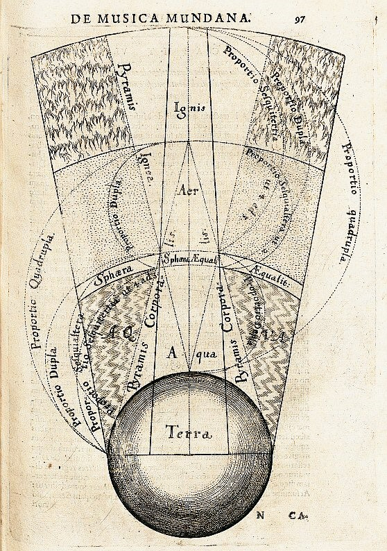

Earth is the basest element in many beliefs such as Hinduism.
It created using all the other elements, can be perceived by all five senses -hearing, touch, sight, taste, smell-.
Segment of the macrocosm showing the elemental spheres of terra (earth), aqua (water), aer (air), and ignis (fire).
Earth represents things that were solid and it is blunt, dense, and immobile.
| ELEMENT | TEMPERAMENT | MYSTIC CHARACTER | GENERAL |
| earth | gall, black | lover of babies, possessive | riches |
Earth is both cold and dry.
In Chinese philosophy the universe consists of heaven and earth and also Saturn is associated with earth.

It is easy to think of the earth as being solid dirt through and through, but in reality it is made up of several layers. While many of these layers are solid, the layer that surrounds the core is called the liquid outer core. It is so hot inside the earth that the rock at this layer has actually melted.
"Utinam tam facile vera invenire possem quam falsa convincere."
If you want to continue to read, you can click to image below.